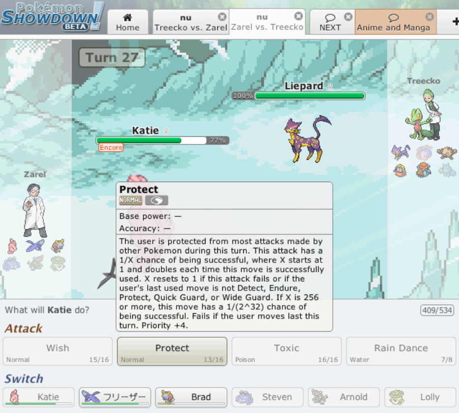

StratMon - Introduction
Welcome to StratMon! This is a fan-made website for the popular battle format played on browser - Pokemon Showdown. This website intends to provide simple information on Smogon battle simulation to any Pokemon fan, or complete newbies.
Note: We do not own any assets that are used within this website; they are all under the legal control of Game Freak. All rights reserved ©. For more information, navigate to Legal
Brief history outline
The website 'Pokemon Showdown' was originally developed by a small creator, Guagcong "Zarel" Luo in 2011. He was inspired by his experience on an older simulator called Pokemon Online. The purpose of 'Pokemon Showdown' was to create a bug-free simulator, encompassing all mechanics for all Pokemon generations, in which users can simulate battles.

Image sourced from Pokemon Showdown for more information read Legal
Evolution
In 2012, Pokemon Showdown was adopted by Smogon University. This became an official battle simulator for competitive Pokemon ever since, as Smogon has many well-made formats such as Doubles, Anything goes, and offical VGC. Fans have been extremely satisfied with how Smogon has turned out, with many large content creators like WolfeyVGC consistently commending the game. This creates a close community, where Pokemon fans can passionately battle with their own strategies.
To learn more, please navigate to any of the following:

Image sourced from Wikitubia